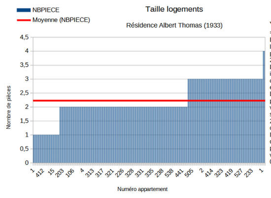
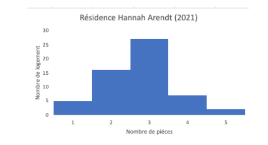
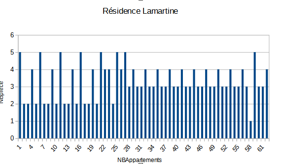
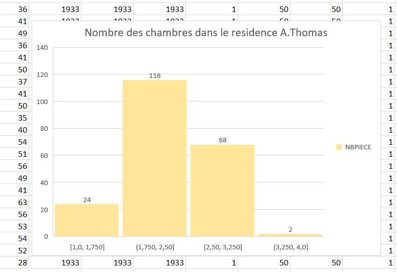
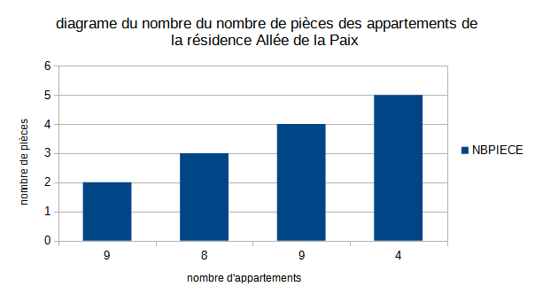
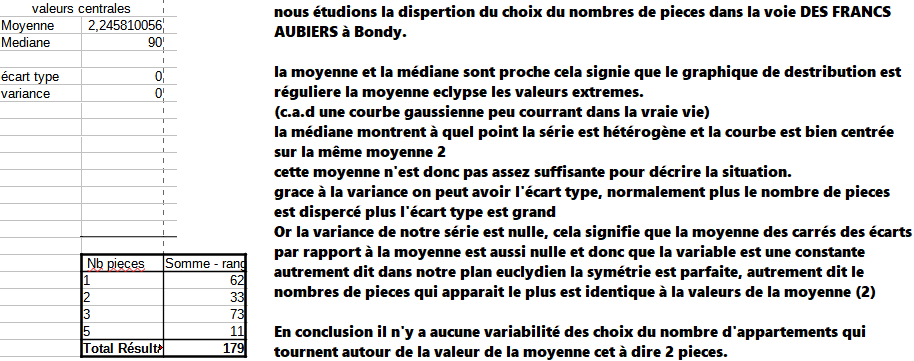
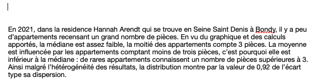

Statistique univariée
Télécharger et ouvrir le fichier de données du cours.
1 Termes
1.1 Trouver des termes pour les objets en statistiques
exemples
variable,
observation,
valeur
A vous !
On retiendra pour le moment uniquement les termes : individu / population / variable et modalité
1.2 distinguer tableau complet, tig, tableau condensé
Individu -> Modalité
Modalité -> Individus
2 L’essentiel : la forme d’une distribution
2.1 Abscisses et ordonnées

2.2 Tiges et feuilles
discrétisation la plus rudimentaire
2.3 Et sous un tableur
2.3.0.1 Resultat attendu

Et non pas :

2.3.1 Préparation de l’exercice
2.3.1.1 Pour obtenir un TIG avec une seule variable, quelle variable choisir et pour quels individus ?
Dans l’exemple proposé du cous, on choisit la colonne de la dénomination des bureaux (1 à 32) et les abstentions à Bondy
Cet exercice permet d’utiliser dans le tableur :
utilisation de la barre d’adresse
utilisation des noms pour la formule
https://help.libreoffice.org/6.2/fr/text/scalc/guide/value_with_name.html
formule frequence, formule matricielle (CTRL + MAJ + ENTREE)
sélection pour exporter comme image
formules du tableau

2.3.2 Quel commentaire ?
- étendue
- forme de la distribution
2.4 A explorer
graphique en barres, lignes (lissage)
Observer la disposition des bornes : elles sont utilisées comme des étiquettes et non pas comme une série de valeurs.
2.5 Correction graphiques étudiants
En fonction du rendu
3 Pour raffiner : les indicateurs
Nous avons déjà vu l’amplitude à travers minimum et maximum. Il y en a d’autres. Ils servent à résumer la série statistique
Pour l’exemple, on prend la commune choisie
## 'data.frame': 32 obs. of 105 variables:
## $ Code.du.département : int 93 93 93 93 93 93 93 93 93 93 ...
## $ Libellé.du.département : chr "Seine-Saint-Denis" "Seine-Saint-Denis" "Seine-Saint-Denis" "Seine-Saint-Denis" ...
## $ Code.de.la.circonscription : int 9 9 9 9 9 9 9 9 9 9 ...
## $ Libellé.de.la.circonscription: chr "9ème circonscription" "9ème circonscription" "9ème circonscription" "9ème circonscription" ...
## $ Code.de.la.commune : int 10 10 10 10 10 10 10 10 10 10 ...
## $ Libellé.de.la.commune : chr "Bondy" "Bondy" "Bondy" "Bondy" ...
## $ Code.du.b.vote : int 1 2 3 4 5 6 7 12 18 19 ...
## $ Inscrits : int 736 818 970 857 815 866 843 629 748 658 ...
## $ Abstentions : int 190 198 285 291 285 262 295 178 200 161 ...
## $ X..Abs.Ins : chr "25,82" "24,21" "29,38" "33,96" ...
## $ Votants : int 546 620 685 566 530 604 548 451 548 497 ...
## $ X..Vot.Ins : chr "74,18" "75,79" "70,62" "66,04" ...
## $ Blancs : int 8 11 12 16 3 6 9 6 10 7 ...
## $ X..Blancs.Ins : chr "1,09" "1,34" "1,24" "1,87" ...
## $ X..Blancs.Vot : chr "1,47" "1,77" "1,75" "2,83" ...
## $ Nuls : int 5 5 1 2 1 5 5 7 3 2 ...
## $ X..Nuls.Ins : chr "0,68" "0,61" "0,1" "0,23" ...
## $ X..Nuls.Vot : chr "0,92" "0,81" "0,15" "0,35" ...
## $ Exprimés : int 533 604 672 548 526 593 534 438 535 488 ...
## $ X..Exp.Ins : chr "72,42" "73,84" "69,28" "63,94" ...
## $ X..Exp.Vot : chr "97,62" "97,42" "98,1" "96,82" ...
## $ N.Panneau : int 1 1 1 1 1 1 1 1 1 1 ...
## $ Sexe : logi FALSE FALSE FALSE FALSE FALSE FALSE ...
## $ Nom : chr "ARTHAUD" "ARTHAUD" "ARTHAUD" "ARTHAUD" ...
## $ Prénom : chr "Nathalie" "Nathalie" "Nathalie" "Nathalie" ...
## $ Voix : int 4 2 0 1 1 2 1 1 2 2 ...
## $ X..Voix.Ins : chr "0,54" "0,24" "0" "0,12" ...
## $ X..Voix.Exp : chr "0,75" "0,33" "0" "0,18" ...
## $ X : int 2 2 2 2 2 2 2 2 2 2 ...
## $ X.1 : chr "M" "M" "M" "M" ...
## $ X.2 : chr "ROUSSEL" "ROUSSEL" "ROUSSEL" "ROUSSEL" ...
## $ X.3 : chr "Fabien" "Fabien" "Fabien" "Fabien" ...
## $ X.4 : int 8 20 10 3 1 9 8 14 12 11 ...
## $ X.5 : chr "1,09" "2,44" "1,03" "0,35" ...
## $ X.6 : chr "1,5" "3,31" "1,49" "0,55" ...
## $ X.7 : int 3 3 3 3 3 3 3 3 3 3 ...
## $ X.8 : chr "M" "M" "M" "M" ...
## $ X.9 : chr "MACRON" "MACRON" "MACRON" "MACRON" ...
## $ X.10 : chr "Emmanuel" "Emmanuel" "Emmanuel" "Emmanuel" ...
## $ X.11 : int 96 158 106 84 73 110 94 85 97 110 ...
## $ X.12 : chr "13,04" "19,32" "10,93" "9,8" ...
## $ X.13 : chr "18,01" "26,16" "15,77" "15,33" ...
## $ X.14 : int 4 4 4 4 4 4 4 4 4 4 ...
## $ X.15 : chr "M" "M" "M" "M" ...
## $ X.16 : chr "LASSALLE" "LASSALLE" "LASSALLE" "LASSALLE" ...
## $ X.17 : chr "Jean" "Jean" "Jean" "Jean" ...
## $ X.18 : int 7 17 9 6 2 4 9 6 11 10 ...
## $ X.19 : chr "0,95" "2,08" "0,93" "0,7" ...
## $ X.20 : chr "1,31" "2,81" "1,34" "1,09" ...
## $ X.21 : int 5 5 5 5 5 5 5 5 5 5 ...
## $ X.22 : logi FALSE FALSE FALSE FALSE FALSE FALSE ...
## $ X.23 : chr "LE PEN" "LE PEN" "LE PEN" "LE PEN" ...
## $ X.24 : chr "Marine" "Marine" "Marine" "Marine" ...
## $ X.25 : int 75 82 60 70 19 36 51 44 70 51 ...
## $ X.26 : chr "10,19" "10,02" "6,19" "8,17" ...
## $ X.27 : chr "14,07" "13,58" "8,93" "12,77" ...
## $ X.28 : int 6 6 6 6 6 6 6 6 6 6 ...
## $ X.29 : chr "M" "M" "M" "M" ...
## $ X.30 : chr "ZEMMOUR" "ZEMMOUR" "ZEMMOUR" "ZEMMOUR" ...
## $ X.31 : chr "Éric" "Éric" "Éric" "Éric" ...
## $ X.32 : int 34 31 25 18 5 30 21 20 30 34 ...
## $ X.33 : chr "4,62" "3,79" "2,58" "2,1" ...
## $ X.34 : chr "6,38" "5,13" "3,72" "3,28" ...
## $ X.35 : int 7 7 7 7 7 7 7 7 7 7 ...
## $ X.36 : chr "M" "M" "M" "M" ...
## $ X.37 : chr "MÉLENCHON" "MÉLENCHON" "MÉLENCHON" "MÉLENCHON" ...
## $ X.38 : chr "Jean-Luc" "Jean-Luc" "Jean-Luc" "Jean-Luc" ...
## $ X.39 : int 233 218 398 335 410 366 317 218 250 205 ...
## $ X.40 : chr "31,66" "26,65" "41,03" "39,09" ...
## $ X.41 : chr "43,71" "36,09" "59,23" "61,13" ...
## $ X.42 : int 8 8 8 8 8 8 8 8 8 8 ...
## $ X.43 : logi FALSE FALSE FALSE FALSE FALSE FALSE ...
## $ X.44 : chr "HIDALGO" "HIDALGO" "HIDALGO" "HIDALGO" ...
## $ X.45 : chr "Anne" "Anne" "Anne" "Anne" ...
## $ X.46 : int 7 3 11 3 4 5 10 6 8 10 ...
## $ X.47 : chr "0,95" "0,37" "1,13" "0,35" ...
## $ X.48 : chr "1,31" "0,5" "1,64" "0,55" ...
## $ X.49 : int 9 9 9 9 9 9 9 9 9 9 ...
## $ X.50 : chr "M" "M" "M" "M" ...
## $ X.51 : chr "JADOT" "JADOT" "JADOT" "JADOT" ...
## $ X.52 : chr "Yannick" "Yannick" "Yannick" "Yannick" ...
## $ X.53 : int 20 31 14 9 0 4 2 13 18 14 ...
## $ X.54 : chr "2,72" "3,79" "1,44" "1,05" ...
## $ X.55 : chr "3,75" "5,13" "2,08" "1,64" ...
## $ X.56 : int 10 10 10 10 10 10 10 10 10 10 ...
## $ X.57 : logi FALSE FALSE FALSE FALSE FALSE FALSE ...
## $ X.58 : chr "PÉCRESSE" "PÉCRESSE" "PÉCRESSE" "PÉCRESSE" ...
## $ X.59 : chr "Valérie" "Valérie" "Valérie" "Valérie" ...
## $ X.60 : int 37 29 24 12 5 13 12 20 24 29 ...
## $ X.61 : chr "5,03" "3,55" "2,47" "1,4" ...
## $ X.62 : chr "6,94" "4,8" "3,57" "2,19" ...
## $ X.63 : int 11 11 11 11 11 11 11 11 11 11 ...
## $ X.64 : chr "M" "M" "M" "M" ...
## $ X.65 : chr "POUTOU" "POUTOU" "POUTOU" "POUTOU" ...
## $ X.66 : chr "Philippe" "Philippe" "Philippe" "Philippe" ...
## $ X.67 : int 2 7 4 1 3 3 5 4 3 3 ...
## $ X.68 : chr "0,27" "0,86" "0,41" "0,12" ...
## $ X.69 : chr "0,38" "1,16" "0,6" "0,18" ...
## $ X.70 : int 12 12 12 12 12 12 12 12 12 12 ...
## [list output truncated]abstention <- data [ , c("Code.du.b.vote","Abstentions")]
write.csv(abstention, "data/abstention2022.csv", fileEncoding = "UTF-8")A votre avis pourquoi ? (cf forum sur le moodle)
3.1 Calcul : valeurs centrales et dispersion
3.1.1 Valeurs centrales
Il s’agit de caractériser une distribution par son centre.
3.1.1.1 Moyenne et médiane
3.1.1.1.1 Calcul
Le calcul de la moyenne est connu. Celui de la médiane beaucoup moins.
3.1.1.1.1.1 Sur le tableau complet
Créer une colonne rang. Et relever le rang médian

3.1.1.2 savoir faire tableur
valeur fixe et relative (utilisation du $ et F4)
au niveau graphique, rajout d’un axe par le menu insertion après double clic sur le graphique (onglet positionnement, menu déroulant valeur)
3.1.1.2.1 Que retenir ?
Expliquer ces phrases issues du Chadule
- La médiane est dans une distribution la valeur la plus proche de toutes les autres
Il s’agit d’une propriété mathématique de la médiane.
- les valeurs extrêmes décentrent la moyenne
3.1.2 Dispersion : Ecart-type et variance
La distribution est-elle hétérogène ?
3.1.2.1 2 définitions :
écart moyen des valeurs à leur moyenne arithmétique
moyenne du carré des écarts
3.1.2.2 Une question fondamentale : pourquoi utiliser les carrés ?
et notamment, pour l’oeil du géographe :
Une façon de penser à cela est que l’écart-type est similaire à une “distance par rapport à la moyenne”.
Comparez cela à des distances dans un espace euclidien - ceci vous donne la vraie distance, où ce que vous avez suggéré (qui, en fait, est la déviation absolue ) ressemble plus à un calcul de distance manhattan .
3.1.3 Exercice en cours
Toujours sans passer par les formules, mais avec un tableau pas à pas, créer les indicateurs.
liste des colonnes :
écart à la moyenne
carré des écarts
et à part sur une seule case : moyenne du carré des écarts (variance), l’écart type est la racine carrée.
3.2 Appliquer : appréhender quelques indicateurs
intitulé exercice valeurs centrales et dispersion
Sur une des résidences (sauf la cité du Stade) utilisée en cours, faire le graphique du TIG et indiquer la valeur centrale.
Rajouter une ligne de commentaire expliquant moyenne / médiane et écart type.
3.2.1 Corrections quelques remarques
L’objectif de l’exercice était d’obtenir un commentaire clair avec quelques repères statistiques.
3.2.1.1 Les bons graphiques
3.2.1.1.1 Un graphique du TIG

3.2.1.1.2 Une diagramme de répartition

3.2.1.1.3 Quelles erreurs dans les graphiques suivants ?
  
3.2.2 Les commentaires
Beaucoup d’étudiants ne voient pas la nécessité d’un commentaire…
3.2.2.1 Commentaire clair
La moyenne et la médiane sont très proches. En effet, en moyenne, les logements de la résidence possèdent 3 pièces et 50 % des logements possèdent moins de 3 pièces. On peut en déduire que la série est assez homogène.De plus, l’écart type est faible, ce qui signifie que les valeurs sont peu dispersées autour de la moyenne et donc il vient confirmer que la série est homogène.
3.2.2.2 trop technique

3.2.2.3 Des commentaires intéressants
3.2.2.3.1 Un peu confus.

3.2.2.3.2 Une réflexion sur le terme hétérogène

L5GEABIM Analyses bivariées et multivariées